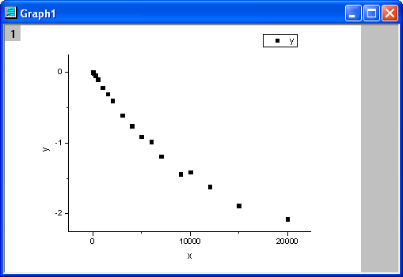

Anpassen einer Integralfunktion mit einem scharfen Peak
Fitting-Integral-SharpPeak
Zusammenfassung
In diesem Tutorial wird Ihnen gezeigt, wie Sie eine integrale Anpassungsfunktion mit einem scharfen Peak in der Integralfunktion definieren und eine Anpassung der Daten mit Hilfe dieser Anpassungsfunktion durchführen.
Da die Integralfunktion einen scharfen Peak enthält, sollte das Integral in drei Segmenten durchgeführt werden, so dass der Peak in ein schmales Intervall integriert werden kann.
Origin-Version mind. erforderlich: Origin 9.0 SR0
Was Sie lernen werden
Dieses Tutorial zeigt Ihnen, wie Sie:
- eine integrale Anpassungsfunktion definieren.
- eine Funktion mit einem scharfen Peak integrieren.
- das Integralintervall in mehrere Segmente unterteilen.
Beispiel und Schritte
Daten importieren
- Öffnen Sie eine neue Arbeitsmappe.
- Kopieren Sie die Daten unter Beispieldaten in die Arbeitsmappe.
- Markieren Sie Spalte B und wählen Sie Zeichnen: Symbol: Punktdiagramm im Origin-Menü. Das Diagramm sollte folgendermaßen aussehen:
-
- 
Anpassungsfunktion definieren
Die integrale Anpassungsfunktion wird wie folgt beschrieben:
^2}{2b^2}-xt}\, dt)")
wobei a und b die Parameter in der Anpassungsfunktion sind.
Initialisierungsparameter sind: a=1e-4, b=1e-4. Beachten Sie, dass die Integralfunktion einen Peak enthält, dessen Zentrum ungefähr bei a liegt und dessen Breite 2b ist. Die Breite des Peaks (2e-4) ist sehr schmal im Vergleich zum Integralintervall [0,1]. Um sicherzustellen, dass es korrekt i die Nachbarschaft des Peakzentrums integriert wird, wird das Integralintervall [0,1] in drei Segmente unterteilt: [0,a-5*b], [a-5*b,a+5*b], [a+5*b,1]. Es wird in jedem Segment integriert, und danach werden die drei Integrale addiert.
Die Anpassungsfunktion kann mit Hilfe des Hilfsmittels Fitfunktionen erstellen definiert werden.
- Wählen Sie Hilfsmittel: Fitfunktionen erstellen im Origin-Menü.
- Klicken Sie im Dialog Fitfunktionen erstellen auf der Seite Ziel auf die Schaltfläche Weiter.
- Wählen Sie auf der Seite Name und Typ die Option User Defined in der Auswahlliste Eine Kategorie auswählen oder erstellen, geben Sie fintpeak in Feld des Funktionsnamens ein und wählen Sie Ausdruck in der Gruppe Funktionstyp. Aktivieren Sie das Kontrollkästchen Integration während Anpassung einschließen. Klicken Sie auf die Schaltfläche Weiter.
- Geben Sie auf der Seite Integrand den Namen myint in das Feld Integrandname, t in das Feld Integrationsvariable und a, b, x in das Feld Argumente ein. Geben Sie folgendes Skript im Feld Integrandfunktion ein.
return 1/(sqrt(2*pi)*b)*exp(-(t-a)^2/(2*b^2)-x*t);
Klicken Sie auf die Schaltfläche Weiter.
- Geben Sie auf der Seite Variablen und Parameter die Parameter a, b in das Feld Parameter ein. Klicken Sie auf die Schaltfläche Weiter.
- Klicken Sie auf der Seite Ausdrucksfunktion auf die Registerkarte Parameter und setzen Sie die Anfangswerte für die Parameter a und b auf 1e-4. Wechseln Sie zur Registerkarte Integrand und setzen Sie den Wert für die Untere Grenze und Obere Grenze auf 0 und 1 sowie den Wert für a, b, x jeweils auf a, b, x.
- Klicken Sie auf der Seite Ausdrucksfunktion auf die Schaltfläche Einfügen. Geben Sie in der Gruppe Schnellprüfung eine 0 in das Feld x= ein und klicken Sie auf die Schaltfläche Auswerten. Es wird das Ergebnis y=9,3e-21 angezeigt. Dies ist ein Anzeichen dafür, dass der Peak nicht richtig integriert wurde, da y sich für x=0 1 annähern sollte. Teilen Sie das Integral in drei Segmente und geben Sie das folgende Skript in das Feld Funktionskörper ein.
integral(myint, 0, a-5*b, a ,b ,x)+integral(myint, a-5*b, a+5*b, a ,b ,x)+ integral(myint, a+5*b, 1, a ,b ,x)
Klicken Sie erneut auf die Schaltfläche Auswerten. Nun wird y=0,84 angezeigt. Dadurch wird deutlich, dass der Peak dieses Mal korrekt integriert wurde.
- Aktualisieren Sie auf der Seite Ausdrucksfunktion das Skript im Feld Funktionskörper folgendermaßen:
log(integral(myint, 0, a-5*b, a ,b ,x)+integral(myint, a-5*b, a+5*b, a ,b ,x) +integral(myint, a+5*b, 1, a ,b ,x))
Klicken Sie auf die Schaltfläche Fertigstellen.
Kurve anpassen
- Wählen Sie Analyse: Anpassen: Nichtlinearer Fit im Origin-Menü. Wählen Sie im Dialogfeld NLFit auf der Seite Einstellungen: Funktionsauswahl die Option User Defined in der Auswahlliste Kategorie und die Funktion fintpeak in der Liste Funktion. Beachten Sie, dass die Initialisierungsparameter während des Definierens der Anpassungsfunktion festgelegt wurden.
- Klicken Sie auf die Schaltfläche Fit, um die Kurve anzupassen.
Anpassungsergebnisse
Die angepasste Kurve sollte folgendermaßen aussehen:
-

Die angepassten Parameter sind im Folgenden zu sehen:
| Parameter |
Value |
Standardfehler |
| a |
4,98302E-4 |
1,07593E-5 |
| b |
1,94275E-4 |
8,21815E-6 |
Das Kor. R-Quadrat beträgt 0,99799. Das Anpassungsergebnis ist also sehr gut.
Beispieldaten
| x |
y |
| 0 |
-0,00267 |
| 60 |
-0,01561 |
| 240 |
-0,05268 |
| 500 |
-0,10462 |
| 1000 |
-0,22092 |
| 1500 |
-0,31004 |
| 2000 |
-0,40695 |
| 3000 |
-0,61328 |
| 4000 |
-0,75884 |
| 5000 |
-0,9127 |
| 6000 |
-0,98605 |
| 7000 |
-1,18957 |
| 9000 |
-1,43831 |
| 10000 |
-1,41393 |
| 12000 |
-1,61458 |
| 15000 |
-1,88098 |
| 20000 |
-2,07792 |